graphs.rmd##
## Attaching package: 'igraph'## The following objects are masked from 'package:stats':
##
## decompose, spectrum## The following object is masked from 'package:base':
##
## union(#chap:graph)
As a consequence, this document provides an up-to-date version of Chapter 1 in the book Graphical Models with R (2012); hereafter abbreviated GMwR, see @hojsgaard:etal:12.
This document also reflects that since GMwR was published in
2012, some packages that are mentioned in GMwR are no longer on CRAN.
This includes the packages lcd and
sna.
In this document it has been emphasized if a function has been
imported from igraph or if it is native function from
gRbase by writing igraph::this\_function() and
gRbase::this\_function()
One notable feature that is not available in this version of
gRbase are functions related to maximal prime subgraph
decomposition. They may be reimplented at a later stage.
(#sec:graph:intro)
A graph as a mathematical object may be defined as a pair \(\cal G = (V, E)\), where \(V\) is a set of vertices or nodes and \(E\) is a set of edges. Each edge is associated with a pair of nodes, its endpoints. Edges may in general be directed, undirected, or bidirected. Graphs are typically visualized by representing nodes by circles or points, and edges by lines, arrows, or bidirected arrows. We use the notation \(\alpha-\beta\), \(\alpha\to\beta\), and \(\alpha\leftrightarrow\beta\) to denote edges between \(\alpha\) and \(\beta\). Graphs are useful in a variety of applications, and a number of packages for working with graphs are available in .
In statistical applications we are particularly interested in two special graph types: undirected graphs and directed acyclic graphs (often called DAGs).
The package supplements by implementing some algorithms useful in
graphical modelling. also provides two wrapper functions,
ug() and dag() for easily creating undirected
graphs and DAGs represented either as igraph objects or
adjacency matrices.
The first sections of this chapter describe some of the most useful functions available when working with graphical models. These come variously from the and , but it is not usually necessary to know which.
As statistical objects, graphs are used to represent models, with nodes representing model variables (and sometimes model parameters) in such a way that the independence structure of the model can be read directly off the graph. Accordingly, a section of this chapter is devoted to a brief description of the key concept of conditional independence and explains how this is linked to graphs. Throughout the book we shall repeatedly return to this in more detail.
Our graphs have a finite node set \(V\) and for the most part they are simple graphs in the sense that they have no loops nor multiple edges. Two vertices \(\alpha\) and \(\beta\) are said to be adjacent, written \(\alpha\sim \beta\), if there is an edge between \(\alpha\) and \(\beta\) in \(\cal G\), i.e. if either \(\alpha - \beta\), \(\alpha\to\beta\), or \(\alpha\leftrightarrow\beta\).
In this chapter we primarily represent graphs as igraph
objects, and except where stated otherwise, the functions we describe
operate on these objects.
{#sec:graph:UG}
The following forms are equivalent:
##
## Attaching package: 'gRbase'## The following objects are masked from 'package:igraph':
##
## edges, is_dag, topo_sort
ug0 <- gRbase::ug(~a:b, ~b:c:d, ~e)
ug0 <- gRbase::ug(~a:b + b:c:d + e)
ug0 <- gRbase::ug(~a*b + b*c*d + e)
ug0 <- gRbase::ug(c("a", "b"), c("b", "c", "d"), "e")
ug0## IGRAPH 0325f2d UN-- 5 4 --
## + attr: name (v/c)
## + edges from 0325f2d (vertex names):
## [1] a--b b--c b--d c--d
plot(ug0)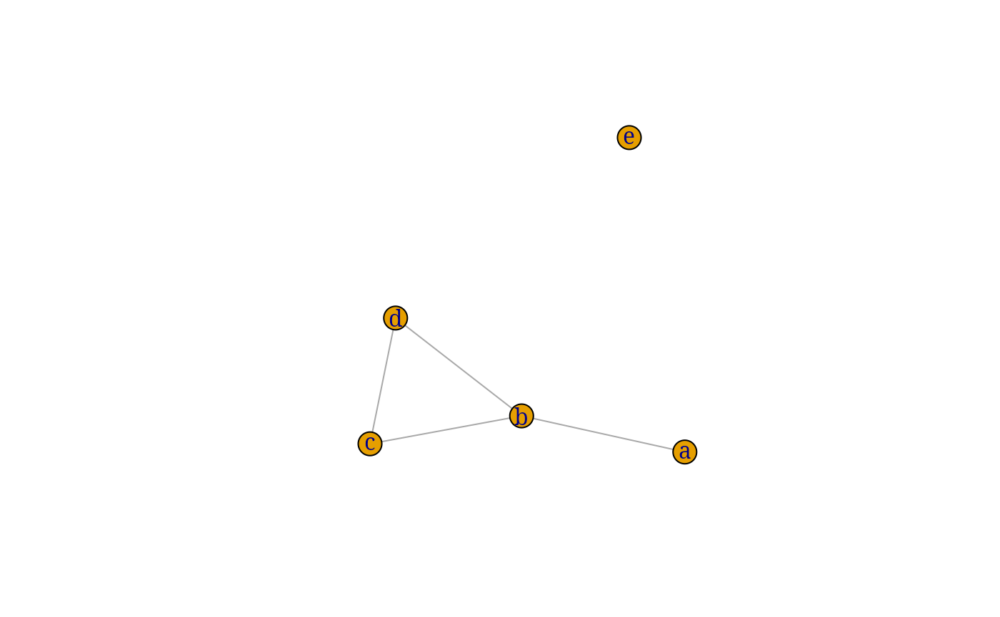
The default size of vertices and their labels is quite small. This is
easily changed by setting certain attributes on the graph, see
Sect.~@ref(sec:graph:igraph) for
examples. However, to avoid changing these attributes for all the graphs
shown in the following we have defined a small plot function . There are
also various facilities for controlling the layout. For example, we may
use a layout algorithm called layout.fruchterman.reingold
as follows:
myplot <- function(x, layout=layout.fruchterman.reingold(x), ...) {
V(x)$size <- 30
V(x)$label.cex <- 3
plot(x, layout=layout, ...)
return(invisible())
}The graph ug0i is then displayed with:
myplot(ug0)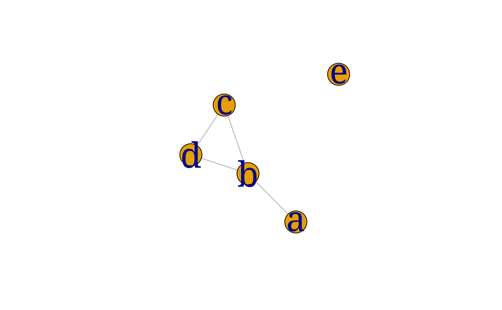
Per default the function returns an igraph object, but
the option result="matrix" lead it to return an adjacency
matrix instead. For example,
ug0i <- gRbase::ug(~a:b + b:c:d + e, result="matrix")
ug0i## a b c d e
## a 0 1 0 0 0
## b 1 0 1 1 0
## c 0 1 0 1 0
## d 0 1 1 0 0
## e 0 0 0 0 0Different represents of a graph can be obtained by coercion:
as(ug0, "matrix")## a b c d e
## a 0 1 0 0 0
## b 1 0 1 1 0
## c 0 1 0 1 0
## d 0 1 1 0 0
## e 0 0 0 0 0
as(ug0, "dgCMatrix")## 5 x 5 sparse Matrix of class "dgCMatrix"
## a b c d e
## a . 1 . . .
## b 1 . 1 1 .
## c . 1 . 1 .
## d . 1 1 . .
## e . . . . .
as(ug0i, "igraph")## IGRAPH 10542e8 UN-- 5 4 --
## + attr: name (v/c), label (v/c)
## + edges from 10542e8 (vertex names):
## [1] a--b b--c b--d c--dEdges can be added and deleted using addEdge() and
removeEdge()
## Using gRbase
ug0a <- gRbase::addEdge("a", "c", ug0)
ug0a <- gRbase::removeEdge("c", "d", ug0)
## Using igraph
ug0a <- igraph::add_edges(ug0, c("a", "c"))
ug0a <- igraph::delete_edges(ug0, c("c|d"))The nodes and edges of a graph can be retrieved with and functions.
## Using gRbase
gRbase::nodes(ug0) ## [1] "a" "b" "c" "d" "e"## List of 5
## $ a: chr "b"
## $ b: chr [1:3] "a" "c" "d"
## $ c: chr [1:2] "b" "d"
## $ d: chr [1:2] "b" "c"
## $ e: chr(0)
## Using igraph
igraph::V(ug0)## + 5/5 vertices, named, from 0325f2d:
## [1] a b c d e## [1] "a" "b" "c" "d" "e"
igraph::E(ug0)## + 4/4 edges from 0325f2d (vertex names):
## [1] a--b b--c b--d c--d## [1] "a|b" "b|c" "b|d" "c|d"
gRbase::maxClique(ug0) ## |> str() ## $maxCliques
## $maxCliques[[1]]
## [1] "e"
##
## $maxCliques[[2]]
## [1] "a" "b"
##
## $maxCliques[[3]]
## [1] "b" "c" "d"
gRbase::get_cliques(ug0) |> str()## List of 3
## $ : chr "e"
## $ : chr [1:2] "a" "b"
## $ : chr [1:3] "b" "c" "d"
## Using igraph
igraph::max_cliques(ug0) |>
lapply(function(x) attr(x, "names")) |> str()## List of 3
## $ : chr "e"
## $ : chr [1:2] "a" "b"
## $ : chr [1:3] "b" "c" "d"A path (of length \(n\)) between \(\alpha\) and \(\beta\) in an undirected graph is a set of vertices \(\alpha=\alpha_0,\alpha_1,\dots,\alpha_n=\beta\) where \(\alpha_{i-1}-\alpha_i\) for \(i=1,\dots, n\). If a path \(n\alpha=\alpha_0,\alpha_1,\dots,\alpha_n=\beta\) has \(\alpha=\beta\) then the path is said to be a cycle of length \(n\). nnn A subset \(D \subset V\) in an undirected graph is said to separate \(A \subset V\) from \(B \subset V\) if every path between a vertex in \(A\) and a vertex in \(B\) contains a vertex from \(D\).
## [1] TRUEThis shows that \(\{b,c\}\) separates \(\{a\}\) and \(\{d\}\).
The graph \(\cal G_0=(V_0,E_0)\) is said to be a subgraph of \(\cal G=(V,E)\) if \(V_0\subseteq V\) and \(E_0\subseteq E\). For \(A \subseteq V\), let \(E_A\) denote the set of edges in \(E\) between vertices in \(A\). Then \(\cal G_A=(A, E_A)\) is the \(A\). For example
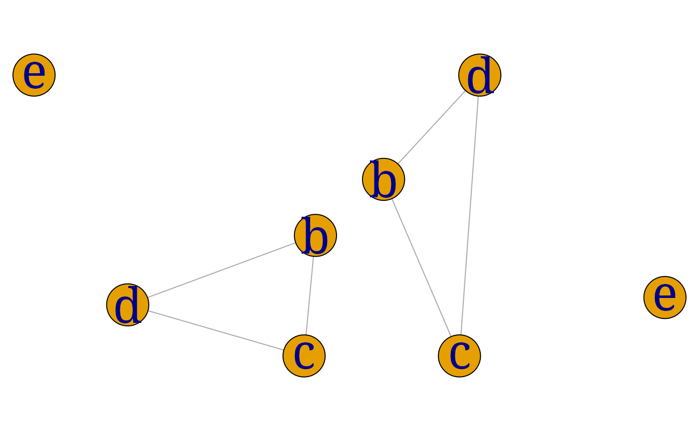
The boundary \(\bound(\alpha)=\adj(\alpha)\) is the set of vertices adjacent to \(\alpha\) and for undirected graphs the boundary is equal to the set of neighbours \(\nei(\alpha)\). The closure \(\clos(\alpha)\) is \(\bound(\alpha)\cup \{\alpha\}\).
gRbase::adj(ug0, "c")## $c
## [1] "b" "d"
gRbase::closure("c", ug0)## [1] "c" "b" "d"{#sec:graph:DAG}
A directed graph as a mathematical object is a pair \(\cal G = (V, E)\) where \(V\) is a set of vertices and \(E\) is a set of directed edges, normally drawn as arrows. A directed graph is acyclic if it has no directed cycles, that is, cycles with the arrows pointing in the same direction all the way around. A DAG is a directed graph that is acyclic.
A DAG may be created using the dag() function. The graph
can be specified by a list of formulas or by a list of vectors. The
following statements are equivalent:
dag0 <- gRbase::dag(~a, ~b*a, ~c*a*b, ~d*c*e, ~e*a, ~g*f)
dag0 <- gRbase::dag(~a + b*a + c*a*b + d*c*e + e*a + g*f)
dag0 <- gRbase::dag(~a + b|a + c|a*b + d|c*e + e|a + g|f)
dag0 <- gRbase::dag("a", c("b", "a"), c("c", "a", "b"), c("d", "c", "e"),
c("e", "a"), c("g", "f"))
dag0## IGRAPH 5ffe96e DN-- 7 7 --
## + attr: name (v/c)
## + edges from 5ffe96e (vertex names):
## [1] a->b a->c b->c c->d e->d a->e f->gNote that \~{ }a} means that \code{"a" has no parents
while
\~{ }d*b*c} means that“d”has parents \code{"b"
and "c"}. Instead of ``\code{*}'', a ``\code{:’’ can be
used in the specification. If the specified graph contains cycles then
dag()} returns \code{NULL.
Per default the function returns an igraph object, but
the option result="matrix" leads it to return an adjacency
matrix instead.
myplot(dag0)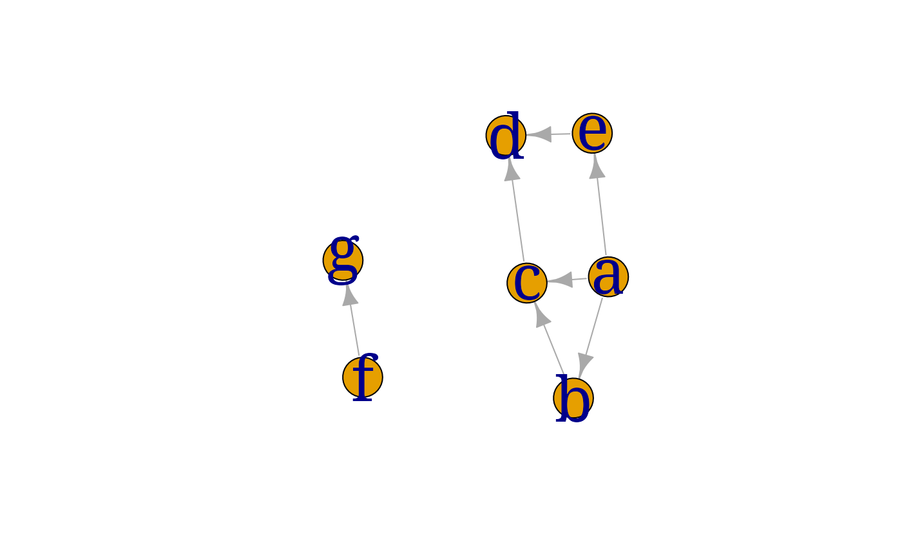
gRbase::nodes(dag0)## [1] "a" "b" "c" "d" "e" "f" "g"## List of 7
## $ a: chr [1:3] "b" "c" "e"
## $ b: chr "c"
## $ c: chr "d"
## $ d: chr(0)
## $ e: chr "d"
## $ f: chr "g"
## $ g: chr(0)Alternatively a list of (ordered) pairs can be optained with edgeList()
## List of 7
## $ : chr [1:2] "a" "b"
## $ : chr [1:2] "a" "c"
## $ : chr [1:2] "a" "e"
## $ : chr [1:2] "b" "c"
## $ : chr [1:2] "c" "d"
## $ : chr [1:2] "e" "d"
## $ : chr [1:2] "f" "g"The vpar() function returns a list, with an element for each node together with its parents:
## List of 7
## $ a: chr "a"
## $ b: chr [1:2] "b" "a"
## $ c: chr [1:3] "c" "a" "b"
## $ d: chr [1:3] "d" "c" "e"
## $ e: chr [1:2] "e" "a"
## $ f: chr "f"
## $ g: chr [1:2] "g" "f"
vpardag0$c## [1] "c" "a" "b"
A path (of length \(n\)) from \(\alpha\) to \(\beta\) is a sequence of vertices \(\alpha=\alpha_0, \dots, \alpha_n=\beta\) such that \(\alpha_{i-1}\to\alpha_i\) is an edge in the graph. If there is a path from \(\alpha\) to \(\beta\) we write \(\alpha\mapsto\beta\). The parents \(\parents(\beta)\) of a node \(\beta\) are those nodes \(\alpha\) for which \(\alpha \rightarrow \beta\). The children \(\child(\alpha)\) of a node \(\alpha\) are those nodes \(\beta\) for which \(\alpha \rightarrow \beta\). The ancestors \(\anc(\beta)\) of a node \(\beta\) are the nodes \(\alpha\) such that \(\alpha\mapsto\beta\). The ancestral set \(\anc(A)\) of a set \(A\) is the union of \(A\) with its ancestors. The ancestral graph of a set \(A\) is the subgraph induced by the ancestral set of \(A\).
gRbase::parents("d", dag0)## [1] "c" "e"
gRbase::children("c", dag0)## [1] "d"
gRbase::ancestralSet(c("b", "e"), dag0)## [1] "a" "b" "e"
ag <- gRbase::ancestralGraph(c("b", "e"), dag0)
myplot(ag)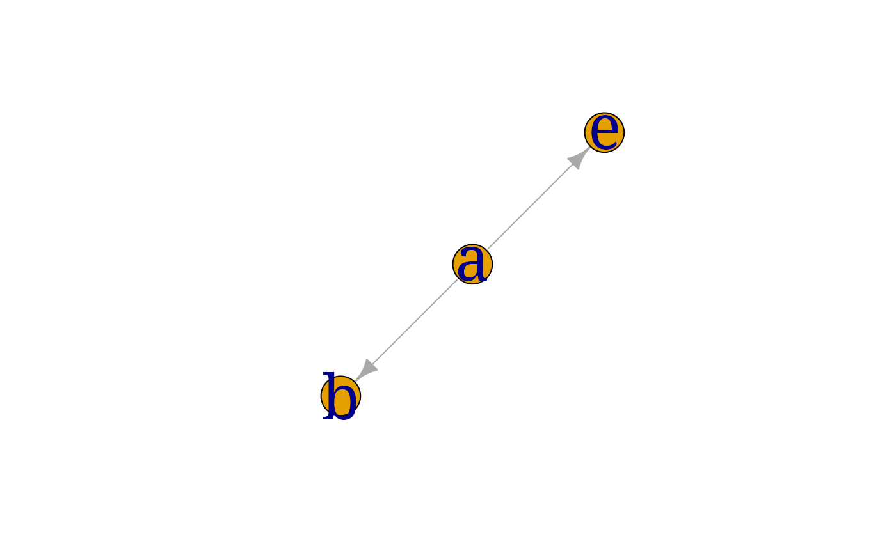
An important operation on DAGs is to (i) add edges between the parents of each node, and then (ii) replace all directed edges with undirected ones, thus returning an undirected graph. This operation is used in connection with independence interpretations of the DAG, see Sect.~@ref(sec:graph:CI), and is known as moralization. This is implemented by the function:
dag0m <- gRbase::moralize(dag0)
myplot(dag0m)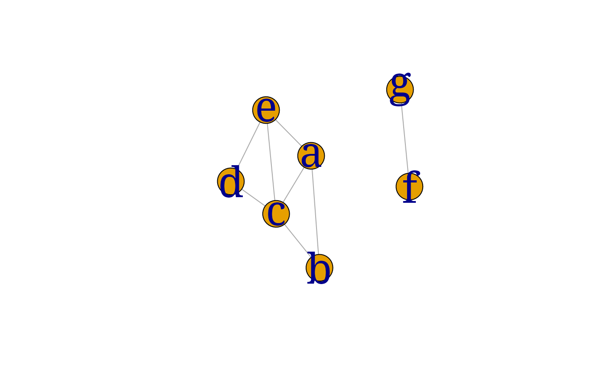
{#sec:graph:chaingraphs}
Although the primary focus of this book is on undirected graphs and DAGs, it is also useful to consider mixed graphs. These are graphs with at least two types of edges, for example directed and undirected, or directed and bidirected.
A sequence of vertices \(v_1,v_2, \dots v_{k}, v_{k+1}\) is called a path if for each \(i=1 \dots k\), either \(v_i - v_{i+1}\), \(v_i \leftrightarrow v_{i+1}\) or \(v_i \rightarrow v_{i+1}\). If \(v_i - v_{i+1}\) for each \(i\) the path is called undirected, if \(v_i \rightarrow v_{i+1}\) for each \(i\) it is called directed, and if \(v_i \rightarrow v_{i+1}\) for at least one \(i\) it is called semi-directed. If \(v_i = v_{k+1}\) it is called a cycle.
Mixed graphs are represented in the package as directed graphs with multiple edges. In this sense they are not simple. A convenient way of defining them (in lieu of model formulae) is to use adjacency matrices. We can construct such a matrix as follows:
adjm <- matrix(c(0, 1, 1, 1,
1, 0, 0, 1,
1, 0, 0, 1,
0, 1, 0, 0), byrow=TRUE, nrow=4)
rownames(adjm) <- colnames(adjm) <- letters[1:4]
adjm## a b c d
## a 0 1 1 1
## b 1 0 0 1
## c 1 0 0 1
## d 0 1 0 0Note that igraph interprets symmetric entries as
double-headed arrows and thus does not distinguish between bidirected
and undirected edges. However we can persuade igraph to
display undirected instead of bidirected edges:
gG1 <- gG2 <- as(adjm, "igraph")
lay <- layout.fruchterman.reingold(gG1)
E(gG2)$arrow.mode <- c(2,0)[1+is.mutual(gG2)]## Warning: `is.mutual()` was deprecated in igraph 2.0.0.
## ℹ Please use `which_mutual()` instead.
## This warning is displayed once every 8 hours.
## Call `lifecycle::last_lifecycle_warnings()` to see where this warning was
## generated.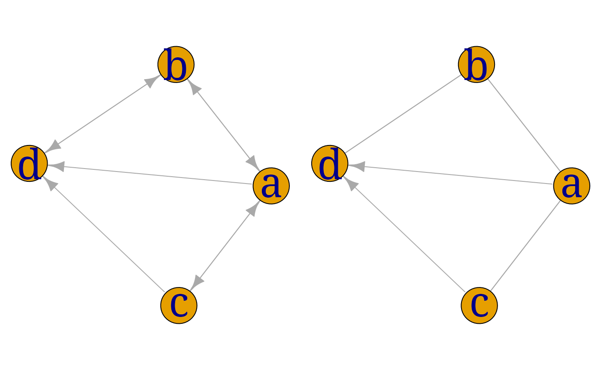
A chain graph is a mixed graph with no bidirected edges and no semi-directed cycles. Such graphs form a natural generalisation of undirected graphs and DAGs, as we shall see later. The following example is from @Frydenberg1990:
%sæt figurstørrelse i Sweave
d1 <- matrix(0, 11, 11)
d1[1,2] <- d1[2,1] <- d1[1,3] <- d1[3,1] <- d1[2,4] <- d1[4,2] <-
d1[5,6] <- d1[6,5] <- 1
d1[9,10] <- d1[10,9] <- d1[7,8] <- d1[8,7] <- d1[3,5] <-
d1[5,10] <- d1[4,6] <- d1[4,7] <- 1
d1[6,11] <- d1[7,11] <- 1
rownames(d1) <- colnames(d1) <- letters[1:11]
cG1 <- as(d1, "igraph")
E(cG1)$arrow.mode <- c(2,0)[1+is.mutual(cG1)]
myplot(cG1, layout=layout.fruchterman.reingold)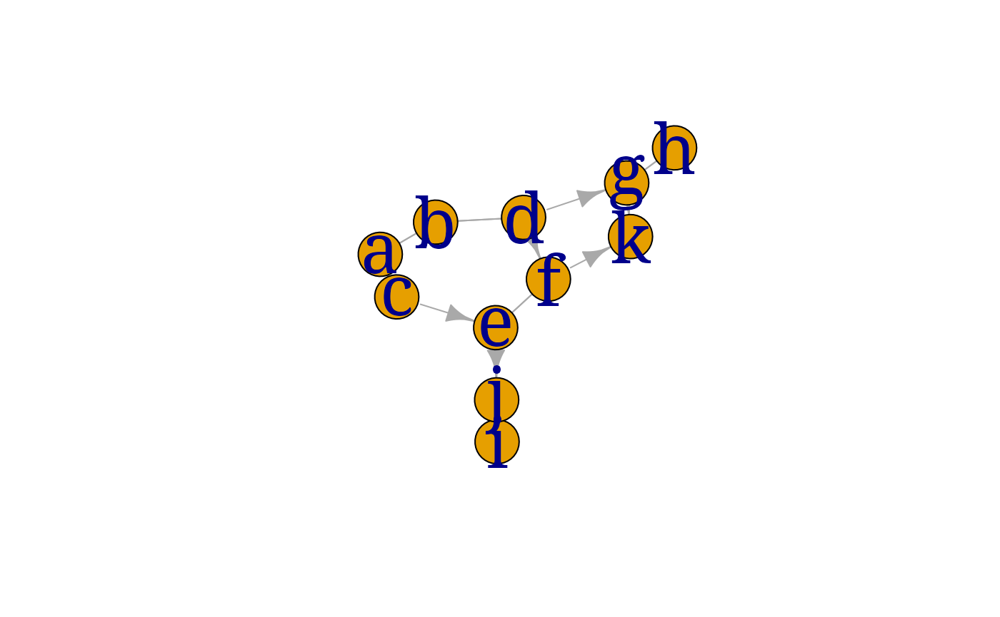
%sæt figurstørrelse i Sweave
The components of a chain graph \(\cal G\) are the connected components of the graph formed after removing all directed edges from \(\cal G\). All edges within a component are undirected, and all edges between components are directed. Also, all arrows between any two components have the same direction. The graph constructed by identifying its nodes with the components of \(\cal G\), and joining two nodes with an arrow whenever there is an arrow between the corresponding components in \(\cal G\), is a DAG, the so-called component DAG of \(\cal G\), written \(\cal G_{C}\).
% The function in the package % determines whether a mixed graph is a chain graph. It takes an % adjacency matrix as input. For example, the above graph is indeed a % chain graph:
% ```{r eval=F} % library(lcd) % is.chaingraph(as(cG1, “matrix”)) % @
% Here vert.order gives an ordering of the vertices,
from which the % connected components may be identified using
chain.size.
The anterior set of a vertex set \(S \subseteq V\) is defined in terms of the component DAG. Write the set of components of \(\cal G\) containing \(S\) as \(S_c\). Then the anterior set of \(S\) in \(\cal G\) is defined as the union of the components in the ancestral set of \(S_c\) in \(\cal G_{C}\). The anterior graph of \(S \subseteq V\) is the subgraph of \(\cal G\) induced by the anterior set of \(S\).
The moralization operation is also important for chain graphs. Similar to DAGs, unmarried parents of the same chain components are joined and directions are then removed.
% The operation % is implemented in the function in the % package, which uses the adjacency matrix representation. For % example,
% ```{r , eval=F} % ## cGm <- as(moralize(as(cG1, “matrix”)), “graphNEL”) % cGm <- moralize(cG1) % plot(cGm) % @
% ```{r echo=F, eval=F} % detach(package:lcd) % @
{#sec:graph:CI}
The concept of statistical independence is presumably familiar to all readers but that of conditional independence may be less so. Suppose that we have a collection of random variables \((X_v)_{v \in V}\) with a joint density. Let \(A\), \(B\) and \(C\) be subsets of \(V\) and let \(X_A=(X_v)_{v \in A}\) and similarly for \(X_B\) and \(X_C\). Then the statement that \(X_A\) and \(X_B\) are conditionally independent given \(X_C\), written \(A \cip B \cd C\), means that for each possible value of \(x_C\) of \(X_C\), \(X_A\) and \(X_B\) are independent in the conditional distribution given \(X_C=x_c\). So if we write \(f()\) for a generic density or probability mass function, then one characterization of \(A \cip B \cd C\) is that \[ f(x_A,x_B \cd x_C) = f(x_A \cd x_C) f(x_B \cd x_C). \] An equivalent characterization [@Dawid1998] is that the joint density of \((X_A, X_B, X_C)\) factorizes as \[\begin{equation} f(x_A,x_B,x_C) = g(x_A,x_C)h(x_B,x_C), {#eqn:graph:factcrit} \end{equation}\] that is, as a product of two functions \(g()\) and \(h()\), where \(g()\) does not depend on \(x_B\) and \(h()\) does not depend on \(x_A\). This is known as the factorization criterion.
Parametric models for \((X_v)_{v \in
V}\) may be thought of as specifying a set of joint densities
(one for each admissible set of parameters). These may admit
factorisations of the form just described, giving rise to conditional
independence relations between the variables. Some models give rise to
patterns of conditional independences that can be represented as an
undirected graph. More specifically, let \(\cal G=(V,E)\) be an undirected graph with
cliques \(C_1, \dots C_k\). Consider a
joint density \(f()\) of the variables
in \(V\). If this admits a
factorization of the form \[
f(x_V) = \prod_{i=1}^k g_i(x_{C_i})
\]
for some functions \(g_1() \dots
g_k()\) where \(g_j()\) depends
on \(x\) only through \(x_{C_j}\) then we say that \(f()\) factorizes according to \(\cal G\).
If all the densities under a model factorize according to \(\cal G\), then \(\cal G\) encodes the conditional
independence structure of the model, through the following result (the
global Markov property): whenever sets \(A\) and \(B\) are separated by a set \(C\) in the graph, then \(A \cip B \cd C\) under the model.
Thus for example
myplot(ug0)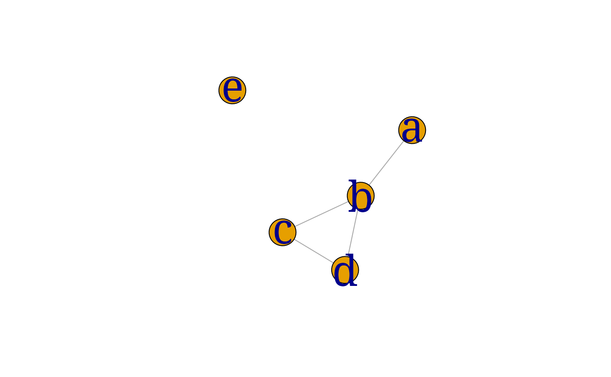
gRbase::separates("a", "d", "b", ug0) ## [1] TRUEshows that under a model with this dependence graph, \(a \cip d \cd b\).
If we want to find out whether two variable sets are marginally independent, we ask whether they are separated by the empty set, which we specify using a character vector of length zero:
## [1] FALSEModel families that admit suitable factorizations are described in later chapters in this book. These include: log-linear models for multivariate discrete data, graphical Gaussian models for multivariate Gaussian data, and mixed interaction models for mixed discrete and continuous data.
Other models give rise to patterns of conditional independences that can be represented by DAGs. These are models for which the variable set \(V\) may be ordered in such way that the joint density factorizes as follows \[\begin{equation} {#eq:graph:dagfact} f(x_V) = \prod_{v \in V} f(x_v \cd x_{\parents(v)}) \end{equation}\] for some variable sets \(\{\parents(v)\}_{v \in V}\) such that the variables in \(\parents(v)\) precede \(v\) in the ordering. Again the vertices of the graph represent the random variables, and we can identify the sets \(\parents(v)\) with the parents of \(v\) in the DAG.
With DAGs, conditional independence is represented by a property called d-separation. That is, whenever sets \(A\) and \(B\) are \(d\)-separated by a set \(C\) in the graph, then \(A \cip B \cd C\) under the model. The notion of \(d\)-separation can be defined in various ways, but one characterisation is as follows: \(A\) and \(B\) are \(d\)-separated by a set \(C\) if and only if they are separated in the graph formed by moralizing the anterior graph of \(A \cup B \cup C\).
So we can easily define a function to test this:
d_separates <- function(a, b, c, dag_) {
##ag <- ancestralGraph(union(union(a, b), c), dag_)
ag <- ancestralGraph(c(a, b, c), dag_)
separates(a, b, c, moralize(ag))
}
d_separates("c", "e", "a", dag0) ## [1] TRUESo under dag0 it holds that \(c \cip e \cd a\).
% Alternatively, we can use the function in the package:
% ```{r } % library(ggm) % dSep(as(dag0, “matrix”), “c”, “e”, “a”) % @
% ```{r echo=F} % detach(package:ggm) % @
Still other models correspond to patterns of conditional independences that can be represented by a chain graph \(\cal G\). There are several ways to relate Markov properties to chain graphs. Here we describe the so-called LWF Markov properties, associated with Lauritzen, Wermuth and Frydenberg.
For these there are two levels to the factorization requirements.
Firstly, the joint density needs to factorize in a way similar to a DAG,
i.e. \[
f(x_V) = \prod_{C \in \calC} f(x_C \cd x_{\parents(C)})
\]
where \(\calC\) is the set of
components of \(\cal G\). In addition,
each conditional density \(f(x_C \cd
x_{\parents(C)})\) must factorize according to an undirected
graph constructed in the following way. First form the subgraph of \(\cal G\) induced by \(C \cup \parents(C)\), drop directions, and
then complete \(\parents(C)\) (that is,
add edges between all vertices in \(\parents(C))\)).
For densities which factorize as above, conditional independence is related to a property called c-separation: that is, \(A \cip B \cd C\) whenever sets \(A\) and \(B\) are \(c\)-separated by \(C\) in the graph. The notion of \(c\)-separation in chain graphs is similar to that of \(d\)-separation in DAGs. \(A\) and \(B\) are \(c\)-separated by a set \(C\) if and only if they are separated in the graph formed by moralizing the anterior graph of \(A \cup B \cup C\).
% The function in the package can % be used to query a given chain graph for \(c\)-separation. For example,
% ```{r eval=F} % library(lcd) % is.separated(“e”, “g”, c(“k”), as(cG1,“matrix”)) % @
% ```{r echo=F, eval=F} % detach(package:lcd) % @
% % implies that \(e \not \negthinspace
\negthinspace \negthinspace \cip g \cd k\) for the chain graph
cG1 % we considered previously.
{#sec:graph:properties}
A node in an undirected graph is simplicial if its boundary is complete.
gRbase::is.simplicial("b", ug0)## [1] FALSE
gRbase::simplicialNodes(ug0)## [1] "a" "c" "d" "e"To obtain the connected components of a graph:
## List of 2
## $ : chr [1:4] "a" "b" "c" "d"
## $ : chr "e"
## Using igraph
igraph::components(ug0) |> str()## List of 3
## $ membership: Named num [1:5] 1 1 1 1 2
## ..- attr(*, "names")= chr [1:5] "a" "b" "c" "d" ...
## $ csize : num [1:2] 4 1
## $ no : num 2
If a cycle \(\alpha=\alpha_0,\alpha_1,\dots,\alpha_n=\alpha\) has adjacent elements \(\alpha_i \sim \alpha_j\) with $j {i-1,i+1} $ then it is said to have a chord. If it has no chords it is said to be chordless. A graph with no chordless cycles of length \(\ge 4\) is called triangulated or chordal:
gRbase::is.triangulated(ug0)## [1] TRUE
igraph::is_chordal(ug0)## $chordal
## [1] TRUE
##
## $fillin
## NULL
##
## $newgraph
## NULLTriangulated graphs are of special interest for graphical models as they admit closed-form maximum likelihood estimates and allow considerable computational simplification by decomposition.
A triple \((A,B,D)\) of non–empty disjoint subsets of \(V\) is said to decompose \(\cal G\) into \(\cal G_{A\cup D}\) and \(\cal G_{B\cup D}\) if \(V = A \cup B \cup D\) where \(D\) is complete and separates \(A\) and \(B\).
gRbase::is.decomposition("a", "d", c("b", "c"), ug0) ## [1] FALSENote that although \(\{d\}\) is
complete and separates \(\{a\}\) and
\(\{b,c\}\) in ug0, the
condition fails because \(V \neq
\{a,b,c,d\}\).
A graph is decomposable if it is complete or if it can be decomposed into decomposable subgraphs. A graph is decomposable if and only if it is triangulated.
An ordering of the nodes in a graph is called a perfect
ordering if \(\bound(i)\cap\{1,\dots,i-1\}\) is complete
for all \(i\). Such an ordering exists
if and only if the graph is triangulated. If the graph is triangulated,
then a perfect ordering can be obtained with the maximum cardinality
search (or mcs) algorithm. The function will produce such an
ordering if the graph is triangulated; otherwise it will return
NULL.
myplot(ug0)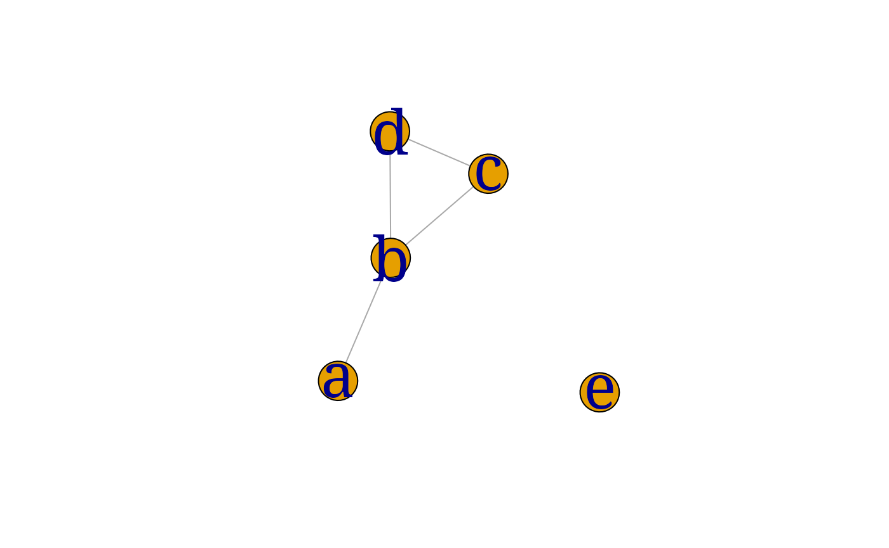
gRbase::mcs(ug0)## [1] "a" "b" "c" "d" "e"
igraph::max_cardinality(ug0)## $alpha
## [1] 5 4 2 3 1
##
## $alpham1
## + 5/5 vertices, named, from 0325f2d:
## [1] e c d b a
igraph::max_cardinality(ug0)$alpham1 |> attr("names")## [1] "e" "c" "d" "b" "a"Sometimes it is convenient to have some control over the ordering given to the variables:
## [1] "d" "c" "b" "a" "e"Here tries to follow the ordering given and succeeds for the first two variables but then fails afterwards.
The cliques of a triangulated undirected graph can be ordered as
\((C_1, \dots, C_Q)\) to have the
running intersection property (also called a RIP
ordering). The running intersection property is that \(C_j \cap (C_1 \cup \dots \cup C_{j-1}) \subset
C_i\) for some \(i<j\) for
\(j=2,\dots, Q\). We define the sets
\(S_j=C_j \cap (C_1 \cup \dots \cup
C_{j-1})\) and \(R_j=C_j\setminus
S_j\) with \(S_1=\emptyset\).
The sets \(S_j\) are called
separators as they separate \(R_j\) from \((C_1
\cup \dots \cup C_{j-1})\setminus S_j\). Any clique \(C_i\) where \(S_j\subset C_i\) with \(i<j\) is a possible parent of \(C_i\). The function returns such an
ordering if the graph is triangulated (otherwise, it returns
list()):
gRbase::rip(ug0)## cliques
## 1 : a b
## 2 : b c d
## 3 : e
## separators
## 1 :
## 2 : b
## 3 :
## parents
## 1 : 0
## 2 : 1
## 3 : 0If a graph is not triangulated it can be made so by adding extra edges, so called fill-ins, using :
ug2 <- gRbase::ug(~a:b:c + c:d + d:e + a:e)
ug2 <- gRbase::ug(~a:b:c + c:d + d:e + e:f + a:f)
gRbase::is.triangulated(ug2)## [1] FALSE
igraph::is_chordal(ug2) |> str()## List of 3
## $ chordal : logi FALSE
## $ fillin : NULL
## $ newgraph: NULL
myplot(ug2)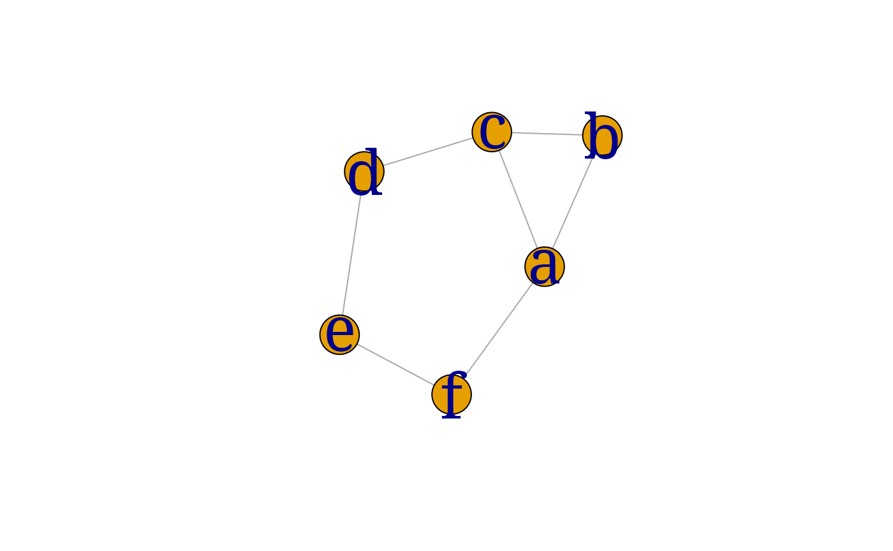
ug3 <- gRbase::triangulate(ug2)
gRbase::is.triangulated(ug3)## [1] TRUE
zzz <- igraph::is_chordal(ug2, fillin=TRUE, newgraph=TRUE)
V(ug2)[zzz$fillin]## + 4/6 vertices, named, from b42467a:
## [1] d a e a
ug32 <- zzz$newgraph
par(mfrow=c(1,3), mar=c(0,0,0,0))
lay <- layout.fruchterman.reingold(ug2)
myplot(ug2, layout=lay);
myplot(ug3, layout=lay);
myplot(ug32, layout=lay)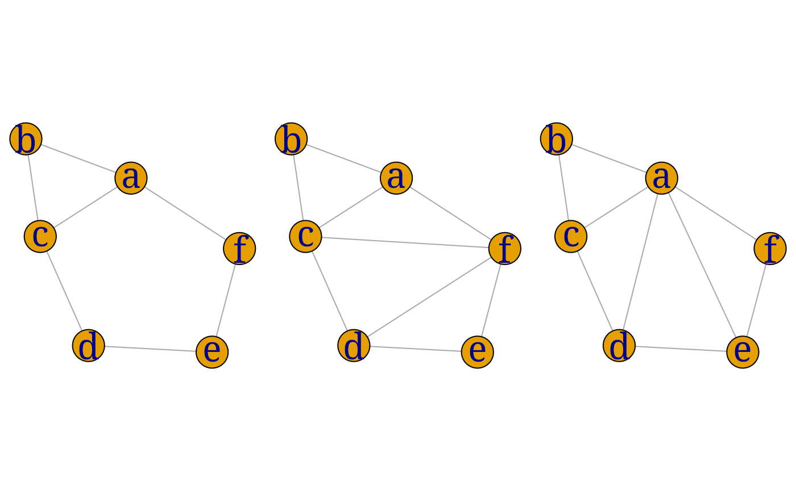
% Recall that an undirected graph \(\cal G\) is triangulated (or chordal) if it % has no cycles of length \(>= 4\) without a chord. % A graph is triangulated if and only if there exists a perfect ordering of its vertices. % Any undirected graph \(\cal G\) can be triangulated by adding edges to % the graph, so called fill–ins, resulting in a graph \(\cal G^*\), say. Some of the fill–ins on \(\cal G^*\) may be superfluous % in the sense that they could be removed and still give a triangulated graph. A % triangulation with no superfluous fill-ins is called a minimal triangulation. In % general this is not unique. This should be distinguished from a minimum % triangulation which is a graph with the smallest number of % fill-ins. Finding a minimum % triangulation is known to be NP-hard. The function % finds a minimal triangulation. Consider the following:
%
% ```{r mintri, , include=F, eval=F} % G1 <- gRbase::ug(~a:b+b:c+c:d+d:e+e:f+a:f+b:e) % mt1.G1 <- minimalTriang(G1) % G2 <- gRbase::ug(~a:b:e:f+b:c:d:e) % mt2.G1<-minimalTriang(G1, TuG=G2) % par(mfrow=c(2,2)) % plot(G1, sub=“G1”) % plot(mt1.G1, sub=“mt1.G1”) % plot(G2, sub=“G2”) % plot(mt2.G1, sub=“mt2.G1”) % @
% %
% The graph G1 is not triangulated; %
mt1.G1} is a minimal triangulation of \code{G1. %
Furthermore, G2} is a triangulation of \code{G1, but it is
not % a minimal triangulation. Finally, mt2.G1 is a minimal
% triangulation of G1} formed on the basis of \code{G2.
%
% The maximal prime subgraph decomposition of an undirected graph % is the smallest subgraphs into which the graph can be % decomposed.
% Consider the following code fragment:
% ```{r mps, , include=F, eval=F} % G1 <- gRbase::ug(~a:b+b:c+c:d+d:e+e:f+a:f+b:e) % G1.rip <- mpd(G1) % G1.rip % par(mfrow=c(1,3)) % plot(G1, main=“G1”) % plot(subGraph(G1.rip\(cliques[[1]], G1), main="subgraph 1") % plot(subGraph(G1.rip\)cliques[[2]], G1), main=“subgraph 2”) % @
% @ % ```{r echo=F, eval=F} %
pdf(file=“fig/GRAPH-mps.pdf”,width=8,height=5/1.7) % <
% %
% Here is not decomposable but the graph can be % decomposed. The function returns a junction % RIP–order representation of the maximal prime subgraph % decomposition. The subgraphs of defined by the cliques listed % in are the smallest subgraphs into which can % be decomposed.
The Markov blanket of a vertex \(v\) in a DAG may be defined as the minimal
set that \(d\)-separates \(v\) from the remaining variables. It is
easily derived as the set of neighbours to \(v\) in the moral graph of \(\cal G\). For example, the Markov blanket
of vertex e} in \code{dag0 is
It is easily seen that the Markov blanket of \(v\) is the union of \(v\)’s parents, \(v\)’s children, and the parents of \(v\)’s children.
%% {#sec:graph:layout}
% [THIS SECTION HAS BEEN REMOVED]
% Although the way graphs are displayed on the page or screen has no
% bearing on their mathematical or statistical properties, in practice %
it is helpful to display them in a way that clearly reveals their %
structure. The package implements several methods for % automatically
setting graph layouts. We sketch these very briefly % here: for more
detailed information see the online help files, for % example, type
?dot.
% \begin{itemize} % - The dot method, which is default, is intended for drawing % DAGs or hierarchies such as organograms or phylogenies. % - The twopi method is suitable for connected graphs: it % produces a circular layout with one node placed at the centre and % others placed on a series of concentric circles about the centre. % - The circo method also produces a circular layout. % - The neato method is suitable for undirected graphs: an % iterative algorithm determines the coordinates of the nodes so that % the geometric distance between node-pairs approximates their path % distance in the graph. % - Similarly, the fdp method is based on an iterative % algorithm due to @Fruchterman1991, in which adjacent nodes are % attracted and non-adjacent nodes are repulsed. % \end{itemize}
% The graphs displayed using Rgraphviz can also be
embellished in % various ways: the following example displays the text
in red and fills % the nodes with light grey.
% @ % ```{r } % plot(dag0, attrs=list(node = list(fillcolor=“lightgrey”,fontcolor=“red”))) % @
% Graph layouts can be reused: this can be useful, for example to
would-be authors of % books on graphical modelling who would like to
compare alternative models for the same dataset. % We illustrate how to
plot a graph and the graph obtained by removing an edge using the same
layout. % To do this, we use the function generate an
Ragraph object, which is a representation % of the layout
of a graph (rather than of the graph as a mathematical object). % From
this we remove the required edge.
% ```{r , eval=F} % edgeNames(ug3)
% ng3 <- agopen(ug3, name=“ug3”, layoutType=“neato”)
% ng4 <- ng3 % AgEdge(ng4) <- AgEdge(ng4)[-3]
% plot(ng3) % @
% ```{r , eval=F} % plot(ng4) % @
% The following example illustrates how individual edge and node
attributes may be set. We use the % chain graph cG1
described above.
% %sæt figurstørrelse i Sweave % ```{r , eval=F} % cG1a <- as(cG1,
“graphNEL”) % nodes(cG1a) <-
c(“alpha”,“theta”,“tau”,“beta”,“pi”,“upsilon”,“gamma”, %
“iota”,“phi”,“delta”,“kappa”) % edges <- buildEdgeList(cG1a) % for (i
in 1:length(edges)) { % if (edges[[i]]@attrs$dir==“both”) edges[[i]]@attrs$dir <- “none” % edges[[i]]@attrs$color <- “blue” % }
% nodes <- buildNodeList(cG1a) % for (i in 1:length(nodes)) { %
nodes[[i]]@attrs$fontcolor <- “red” %
nodes[[i]]@attrs$shape <- “ellipse” %
nodes[[i]]@attrs$fillcolor <-
“lightgrey” % if (i <= 4) { % nodes[[i]]@attrs$fillcolor <- “lightblue” %
nodes[[i]]@attrs$shape <- “box” % } % }
% cG1al <- agopen(cG1a, edges=edges, nodes=nodes, name=“cG1a”,
layoutType=“neato”) % plot(cG1al) % @ % %sæt figurstørrelse i Sweave
{#sec:graph:igraph}
It is possible to create igraph objects using the
function:
ug4 <- graph.formula(a -- b:c, c--b:d, e -- a:d)
ug4## IGRAPH 8acb390 UN-- 5 6 --
## + attr: name (v/c)
## + edges from 8acb390 (vertex names):
## [1] a--b a--c a--e b--c c--d d--e
myplot(ug4)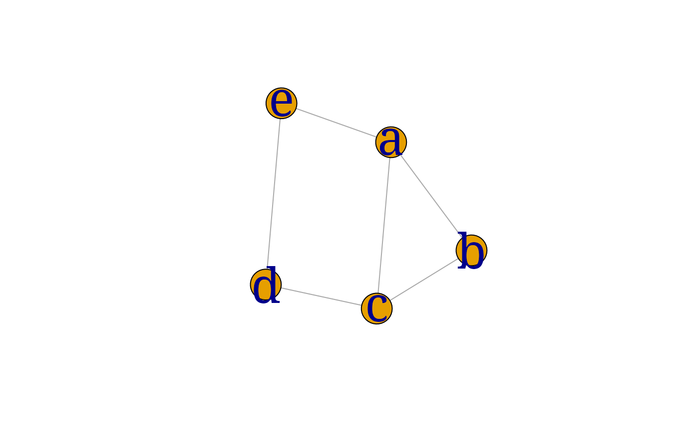
The same graph may be created from scratch as follows:
ug4.2 <- graph.empty(n=5, directed=FALSE)
V(ug4.2)$name <- V(ug4.2)$label <- letters[1:5]
ug4.2 <- add.edges(ug4.2, 1+c(0,1, 0,2, 0,4, 1,2, 2,3, 3,4))## Warning: `add.edges()` was deprecated in igraph 2.0.0.
## ℹ Please use `add_edges()` instead.
## This warning is displayed once every 8 hours.
## Call `lifecycle::last_lifecycle_warnings()` to see where this warning was
## generated.
ug4.2## IGRAPH 313d2a2 UN-- 5 6 --
## + attr: label (v/c), name (v/c)
## + edges from 313d2a2 (vertex names):
## [1] a--b a--c a--e b--c c--d d--eThe graph is displayed using the function, with a layout determined
using the graphopt method. A variety of layout algorithms
are available: type ?layout for an overview. Note that per
default the nodes are labelled \(0, 1,
\dots\) and so forth. We show how to modify this shortly.
As mentioned previously we have created a custom function which creates somewhat more readable plots:
myplot(ug4, layout=layout.graphopt)Objects in graphs are defined in terms of node and edge lists. In addition, they have attributes: these belong to the vertices, the edges or to the graph itself. The following example sets a graph attribute, layout, and two vertex attributes, label and color. These are used when the graph is plotted. The name attribute contains the node labels.
ug4$layout <- layout.graphopt(ug4)## Warning: `layout.graphopt()` was deprecated in igraph 2.0.0.
## ℹ Please use `layout_with_graphopt()` instead.
## This warning is displayed once every 8 hours.
## Call `lifecycle::last_lifecycle_warnings()` to see where this warning was
## generated.
V(ug4)$label <- V(ug4)$name
V(ug4)$color <- "red"
V(ug4)[1]$color <- "green"
V(ug4)$size <- 40
V(ug4)$label.cex <- 3
plot(ug4)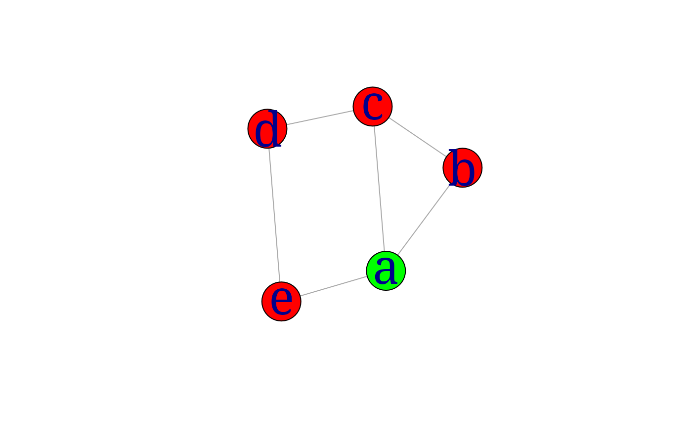
Note the use of array indices to access the attributes of the
individual vertices. Currently, the indices are zero-based, so that
V(ug4)[1] refers to the second node (B). (This may change).
Edges attributes are accessed similarly, using a container structure
E(ug4): also here the indices are zero-based
(currently).
It is easy to extend igraph objects by defining new
attributes. In the following example we define a new vertex attribute,
discrete, and use this to color the vertices.
ug5 <- set.vertex.attribute(ug4, "discrete", value=c(T, T, F, F, T))## Warning: `set.vertex.attribute()` was deprecated in igraph 2.0.0.
## ℹ Please use `set_vertex_attr()` instead.
## This warning is displayed once every 8 hours.
## Call `lifecycle::last_lifecycle_warnings()` to see where this warning was
## generated.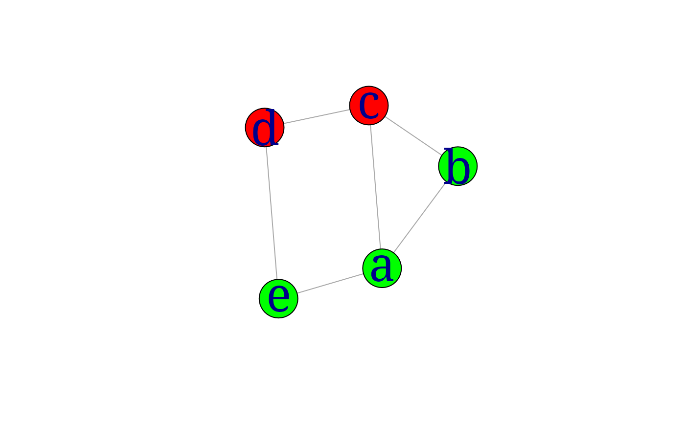
A useful interactive drawing facility is provided with the function. This causes a pop-up window to appear in which the graph can be manually edited. One use of this is to edit the layout of the graph: the new coordinates can be extracted and re-used by the function. For example
The function returns a window id (here 2). While the popup window is open, the current layout can be obtained by passing the window id to the function, as for example
xy <- tkplot.getcoords(2)
plot(g, layout=xy)It is straightforward to reuse layout information with
igraph objects. The layout functions when applied to graphs
return a matrix of \((x,y)\)
coordinates:
## [,1] [,2]
## [1,] 0.6566656 0.44492190
## [2,] 0.5694600 1.59127688
## [3,] 1.5610941 1.00955841
## [4,] 2.2763862 -0.05491895
## [5,] 1.2989422 -0.66513915Most layout algorithms use a random generator to choose an initial configuration. Hence if we set the layout attribute to be a layout function, repeated calls to plot will use different layouts. For example, after
ug4$layout <- layout.fruchterman.reingoldrepeated invocations of plot(ug4) will use different
layouts. In contrast, after
ug4$layout <- layout.fruchterman.reingold(ug4)the layout will be fixed. The following code fragment illustrates how two graphs with the same vertex set may be plotted using the same layout.
ug5 <- gRbase::ug(~A*B*C + B*C*D + D*E)
ug6 <- gRbase::ug(~A*B + B*C + C*D + D*E)
lay.fr <- layout.fruchterman.reingold(ug5)
ug6$layout <- ug5$layout <- lay.fr
V(ug5)$size <- V(ug6)$size <- 50
V(ug5)$label.cex <- V(ug6)$label.cex <- 3
par(mfrow=c(1,2), mar=c(0,0,0,0))
plot(ug5); plot(ug6)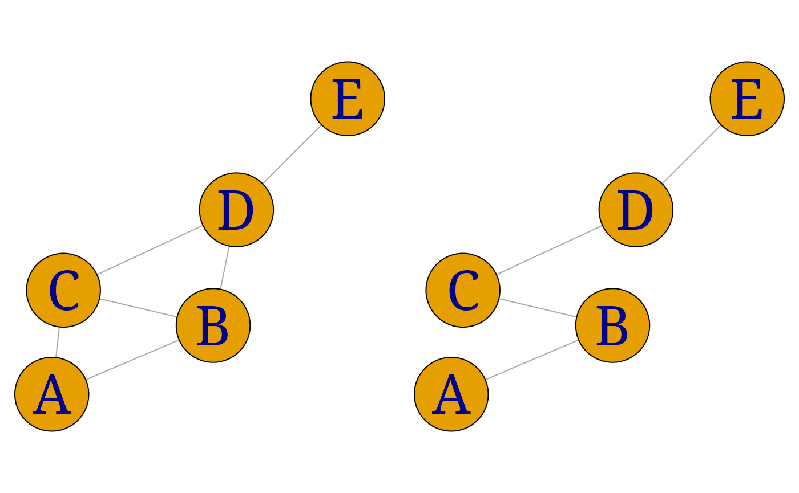
% %
% @ % ```{r echo=F} %
pdf(file=“fig/GRAPH-samelay2.pdf”,width=8,height=8) % <
%
An overview of attributes used in plotting can be obtained by typing
?igraph.plotting. A final example illustrates how more
complex graphs can be displayed:
em1 <- matrix(c(0, 1, 1, 0,
0, 0, 0, 1,
1, 0, 0, 1,
0, 1, 0, 0), nrow=4, byrow=TRUE)
iG <- graph.adjacency(em1) ## Warning: `graph.adjacency()` was deprecated in igraph 2.0.0.
## ℹ Please use `graph_from_adjacency_matrix()` instead.
## This warning is displayed once every 8 hours.
## Call `lifecycle::last_lifecycle_warnings()` to see where this warning was
## generated.
V(iG)$shape <- c("circle", "square", "circle", "square")
V(iG)$color <- rep(c("red", "green"), 2)
V(iG)$label <- c("A", "B", "C", "D")
E(iG)$arrow.mode <- c(2,0)[1 + is.mutual(iG)]
E(iG)$color <- rep(c("blue", "black"), 3)
E(iG)$curved <- c(T, F, F, F, F, F)
iG$layout <- layout.graphopt(iG)
myplot(iG)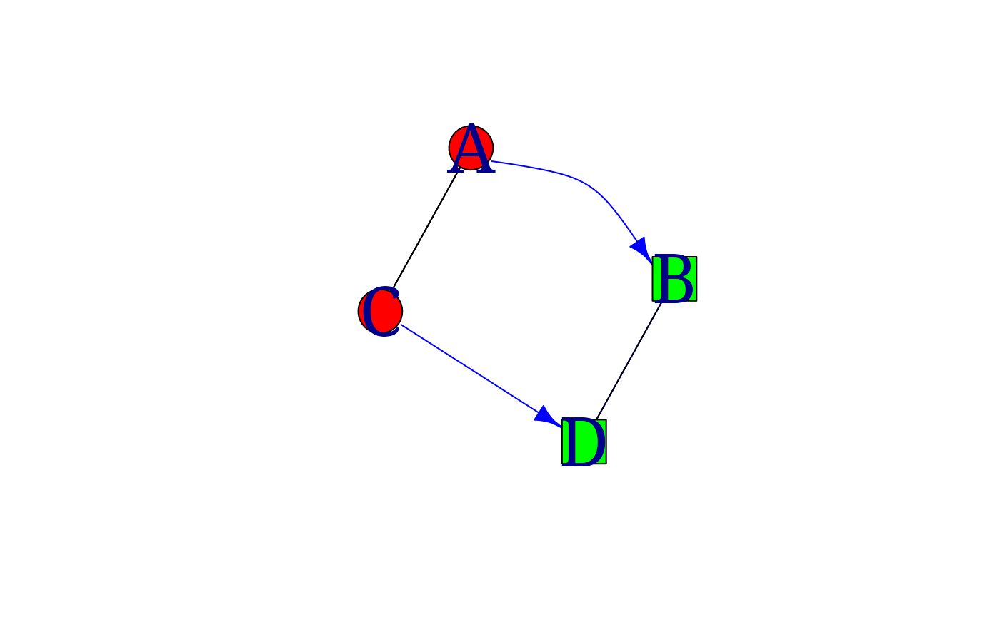
% ### 3-D graphs
% [THIS SECTION HAS BEEN REMOVED]
% The function in the package displays a graph in % three
dimensions. Using a mouse, the graph can be rotated and
% zoomed. Opinions differ as to how useful this is. The following code
fragment % can be used to try the facility. First we derive the
adjacency matrix of a
% built-in graph in the package, then we display it % as a
(pseudo)-three-dimensional graph.
% ```{r eval=F} % library(sna) % aG <- as(graph.famous(“Meredith”),“matrix”) % gplot3d(aG) % @
% ### Alternative Graph Representations % {#sec:graph:representations}
% [THIS SECTION HAS BEEN REMOVED] % As mentioned above,
graphNEL objects are so-called because they % use a node
and edge list representation. So these can also be created % directly,
by specifying a vector of nodes and a list containing the % edges
corresponding to each node. For example,
% @ % ```{r , eval=F} % V <- c(“a”,“b”,“c”,“d”) % edL <- vector(“list”, length=4) % names(edL) <- V % for (i in 1:4) { % edL[[i]] <- list(edges=5-i) % } % gR <- new(“graphNEL”, nodes=V, edgeL=edL) % plot(gR) % @
% ### Different Graph Representations and Coercion between these % {#sec:graphs:coercion}
% Default is that and return a graph in the % graphNEL
representation. Alternative representations are % obtained using: % @ %
```{r print=T} % ug_igraph <- ug(~a:b+b:c:d+e, result=“igraph”) %
ug_matrix <- ug(~a:b+b:c:d+e, result=“matrix”) % @
% It is possible convert between different representations of undirected % graphs and DAGs using :
% @ % ```{r print=T} % ug_NEL <- as(ug_igraph, “graphNEL”) % ug_matrix <- as(ug_NEL, “matrix”) % ug_igraph2 <- as(ug_matrix, “igraph”) % @
{#sec:graph:querygraph}
% The functions for operations on graphs illustrated in the previous
sections are all % available for graphs in the graphNEL
representation (some % operations are in fact available for graphs in
the other % representations as well). Notice that the functions differ
in whether % they take the graph as the first or as the last argument
(that is % mainly related to different styles in different
packages).
The package has a function which provides a common interface to the
graph operations for undirected graphs and DAGs illustrated above.
Moreover, works on graphs represented as igraph objects and
adjacency matrices. The general syntax is
args(querygraph)## function (object, op, set = NULL, set2 = NULL, set3 = NULL)
## NULLFor example, we obtain:
## [1] TRUE
gRbase::querygraph(ug_, "separates", "a", "d", c("b", "c"))## [1] TRUE## [1] TRUE\end{document}